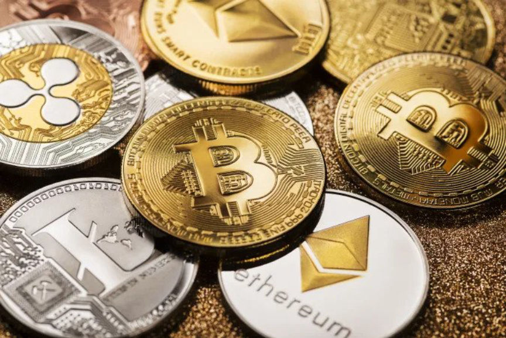

Feds Seize 3.36 Billion Worth of Cryptocurrency Connected to Silk Road
~1 min read | Published on 2022-11-08, tagged Arrested, Cryptocurrency, Darkweb-Market, Pleaded-Guilty, Seized using 149 words.

This is the federal government’s second-largest seizure of cryptocurrency, following the $3.6 billion in stolen crypto linked to the 2016 hack of Bitfinex. According to a news release from the U.S. Attorney's Office, James Zhong of Gainesville, Georgia, pleaded guilty to theft of about $3.36 billion in bitcoin stolen via wire fraud from the Silk Road marketplace, which the FBI shut down in 2013 among controversies.
James came to a plea agreement with the prosecutors to forfeit 50,676.17851897 BTC in exchange for communed sentencing. The whereabouts of this massive amount of bitcoin has been a mystery for almost 10 years, ever since the seizure of Silk Road marketplace.
Silk Road was the most famous darknet marketplace run by Dread Pirate Roberts from 2015, until it was shut down by the FBI two years later, with the admin Ross Ulbricht was unanimously convicted by a jury and sentenced to life in prison.
This is the federal government’s second-largest seizure of cryptocurrency, following the $3.6 billion in stolen crypto linked to the 2016 hack of Bitfinex. According to a news release from the U.S. Attorney's Office, James Zhong of Gainesville, Georgia, pleaded guilty to theft of about $3.36 billion in bitcoin stolen via wire fraud from the Silk Road marketplace, which the FBI shut down in 2013 among controversies.
James came to a plea agreement with the prosecutors to forfeit 50,676.17851897 BTC in exchange for communed sentencing. The whereabouts of this massive amount of bitcoin has been a mystery for almost 10 years, ever since the seizure of Silk Road marketplace.
Silk Road was the most famous darknet marketplace run by Dread Pirate Roberts from 2015, until it was shut down by the FBI two years later, with the admin Ross Ulbricht was unanimously convicted by a jury and sentenced to life in prison.